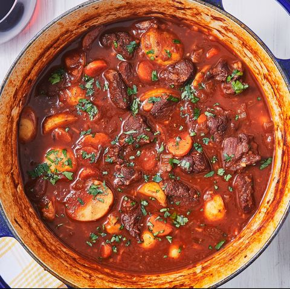

Slow Cooker Lamb Stew with Pomegranate Molasses

Description
This lamb stew uses the tart complexity of pomegranate molasses and the flavor-enhancing simplicity of the slow cooker to give you a stand-out meal with almost no work.
Ingredients
1 tablespoon olive oil
2 pounds boneless lamb meat, diced into 1 inch or bite size pieces
1 large yellow onion, diced
2 cups chicken stock
1/2 cup pomegranate molasses
1 teaspoon salt
1 1/2 pounds small potatoes
5 cloves garlic, diced
1/2 cup chopped parsley
1/2 cup chopped basil
1 cup pepitas
Steps
Sear the lamb:
If your slow cooker has a sear or browning setting, turn it on. Otherwise you can sear in a large skillet or Dutch oven set over medium high heat. Depending on the size of your skillet you might need to brown in batches. Add the oil in the hot pan, add the lamb meat and sear for 6 to 8 minutes, taking care not to stir much so that the meat can brown a bit. Once browned transfer to the slow cooker (if you seared it on your stovetop).Add in the ingredients:
Into the slow cooker add the onion, stock, pomegranate molasses, salt, potatoes, garlic, parsley and basil. Stir together and then cook on a low heat for 8 to 10 hours.Add the pepitas and serve:
Taste the stew to see if you need additional salt (I like another teaspoon personally but adjust according to your tastes).
You can either add the pepitas to the slow cooker and stir it all together or you can dish up the stew, and top individual servings with the pepitas. It's up to you!
Leftovers! This stew is great refrigerated for up to 5 days or frozen for up to 3 months.
Home